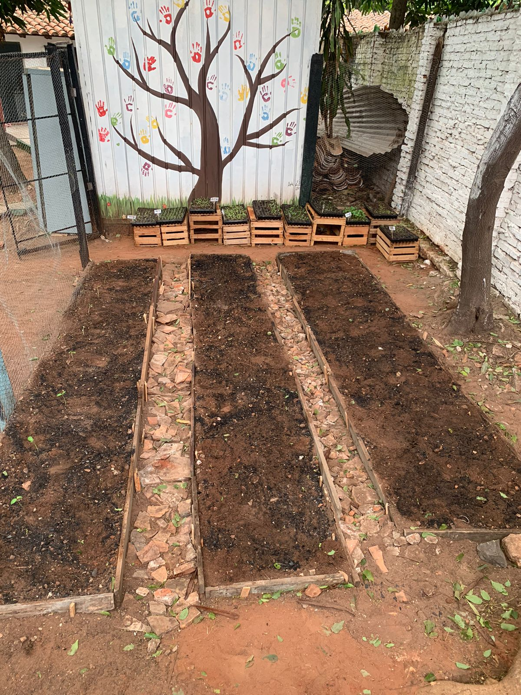
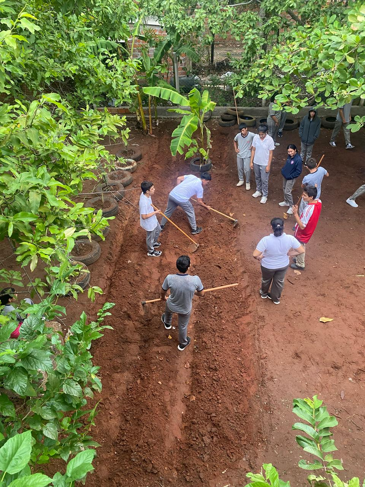
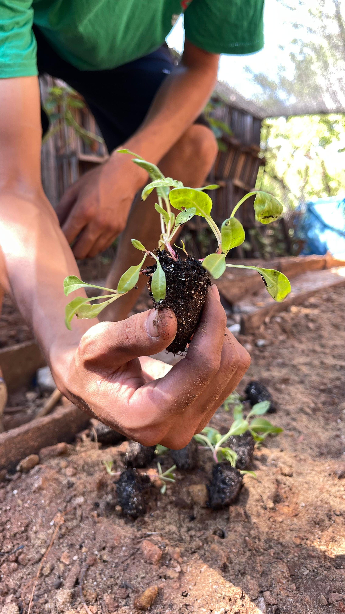
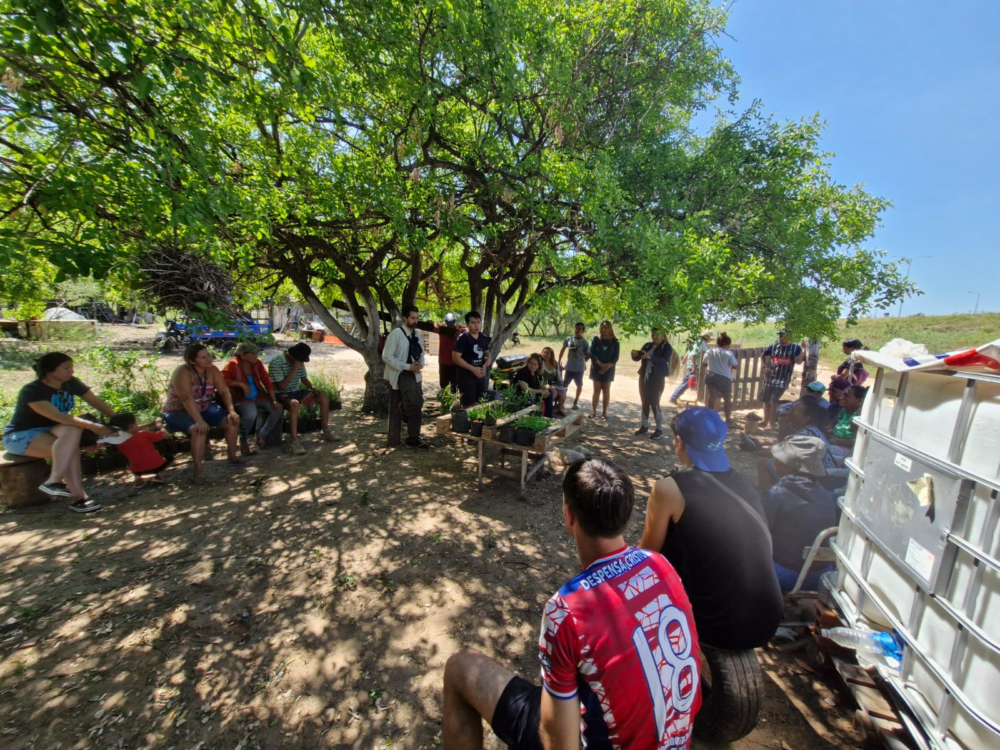

6 de marzo de 2025 · Participación comunitaria
Campamento de la Red de Jóvenes
El 6 de marzo de 2025, la Red de Jóvenes de Sembrando Conciencia se reunió en campamento. Fue un espacio para encontrarse, para fortalecer vínculos y para seguir construyendo desde los territorios donde la asociación trabaja.
La Red de Jóvenes es parte del tejido vivo de Sembrando Conciencia. No es un grupo aparte: es una forma de participación que conecta a jóvenes de distintas comunidades de los Bañados de Asunción en torno a un trabajo común.


Jóvenes que construyen desde adentro
En Sembrando Conciencia creemos que el cambio empieza cuando las personas del territorio son las que lo protagonizan. Los y las jóvenes que forman parte de la Red no son beneficiarios ni destinatarios: son parte de la organización, de las decisiones y del trabajo cotidiano.
Un campamento es un espacio distinto a un taller o una reunión. Permite otro tipo de intercambio: más lento, más horizontal, más conectado con la experiencia compartida. Es un momento para parar, mirarse y pensar juntos hacia dónde va el trabajo.


Cada pequeña acción cuenta. Sembrar conciencia es el primer paso hacia el cambio.
Un proceso en construcción
Este campamento es parte de un proceso más amplio. La Red de Jóvenes tiene historia en los territorios donde Sembrando Conciencia trabaja y sigue construyendo su propio camino junto a la organización.

Nota editorial
Esta nota está basada en los datos confirmados disponibles: nombre del evento y fecha. Para ampliarla se recomienda confirmar con la asociación: ubicación exacta del campamento, número de participantes, agenda y objetivos planteados, organizaciones que participaron, y resultados o acuerdos alcanzados. Las fotos utilizadas corresponden a actividades de la organización en sus territorios de trabajo.